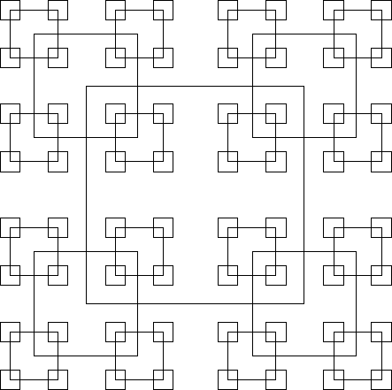

| All Squares |
Geometrically, any square has a unique, well-defined centre point. On a grid this is only true if the sides of the square are an odd number of points long. Since any odd number can be written in the form 2k+1, we can characterise any such square by specifying k, that is we can say that a square whose sides are of length 2k+1 has size k. Now define a pattern of squares as follows.
Hence, given a value of k, we can draw a unique pattern of squares according to the above rules. Furthermore any point on the screen will be surrounded by zero or more squares. (If the point is on the border of a square, it is considered to be surrounded by that square). Thus if the size of the largest square is given as 15, then the following pattern would be produced.

Write a program that will read in a value of k and the coordinates of a point, and will determine how many squares surround the point.
Input will consist of a series of lines. Each line will consist of a value of k and the coordinates of a point. The file will be terminated by a line consisting of three zeroes (0 0 0).
Output will consist of a series of lines, one for each line of the input. Each line will consist of the number of squares containing the specified point, right justified in a field of width 3.
500 113 941 0 0 0
5